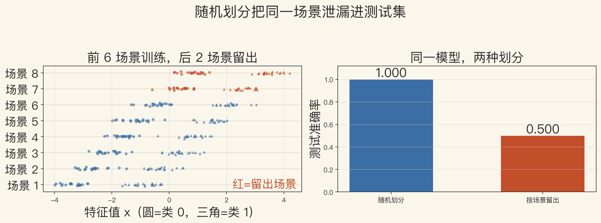
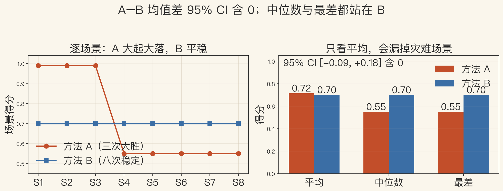
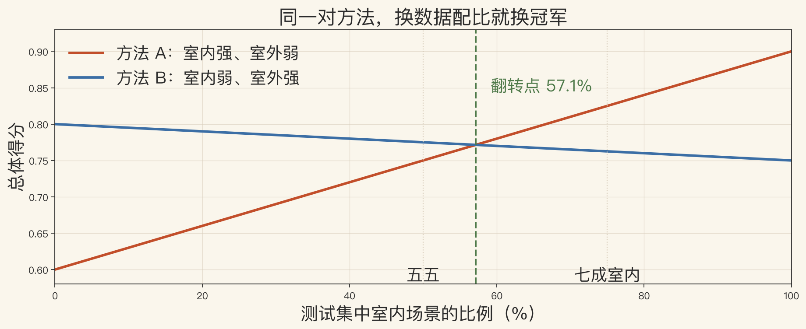

评测课 · 数据、划分、统计
基准不只是排行榜
- 数据从哪来，训练和测试怎么分。
- 结果怎么报统计量。
- 换数据集、换划分，冠军可能换人。
- 所以基准是实验设计。
依据：原书第 954–960 页
数据集 · 四件事
数据集不只是照片
- 要在有挑战、有代表性的数据上测。
- 有真值或别人的结果，测试更定量。
- 数据集至少有场景、标注、真值和划分。
- 按场景分和随机分，结论可能不同。
依据：原书第 954 页
先问两件事
它代表什么
它怎么划分
不然测到的是记忆，不是泛化
基准 · 三件套
基准：数据、协议、榜单
- 数据集常自带 benchmark、结果和代码。
- 书里点名 Middlebury、PASCAL、ImageNet、KITTI。
- 还有 Sintel 和 COCO。
- 协议包括划分、指标、分辨率和聚合。
依据：原书第 954 页
3D 数据 · 任务决定数据
重建数据集：任务决定数据
- NYU3D 和 ScanNet 是早期室内数据集。
- 新算法常用 3D Scenes、ICL-NUIM、ShapeNet。
- 也常用 Tanks and Temples。
- ETH3D 和 Tanks and Temples 有榜单。
依据：原书第 958、960 页
数据集有偏
采集方式和场景分布不同
DTU 多是论文自报
别把室内结论直接搬到室外
实验一 · 划分泄漏
看图：随机划分会抬高分数
- 随机划分准确率 1.000。
- 按场景留出只有 0.500。
- 两者相差 0.500。
- 同场景纹理泄漏进测试集。
依据：本集实验

随机 vs 按场景留出：同场景泄漏｜程序生成，未用教材或论文原图
真值 · 四种来路
真值从哪来，各有偏差
- 真值有激光扫描、合成渲染、多视图重建。
- 人工标注也是一种来路。
- 激光有遮挡和孔洞，合成图太干净。
- 多视图继承匹配误差，人工受规范影响。
依据：原书第 954 页
真值误差
先问怎么来、误差多大
和模型误差分开报
真值错了，排名再漂亮也没用
实验二 · 均值陷阱
看图：平均分会掩盖失败
- A 平均 0.715，高于 B 的 0.700。
- B 的中位数和最差都是 0.700。
- A 的中位数和最差只有 0.550。
- 八个场景里，B 赢了五个。
依据：本集实验

逐场景得分与均值/中位数/最差｜程序生成，未用教材或论文原图
不确定度 · 误差分析
不确定度：别只报均值
- 高斯线性情形，协方差是噪声加权 Hessian 的逆。
- 大问题可以只报方差或单参数协方差。
- 非线性或鲁棒问题，用局部 Hessian 给下界。
- 只报均值不够，要报不确定度。
依据：原书第 952–953 页
三个提醒
Hessian 越陡，估计越稳
参数估计要给范围
至少报关键参数的方差
实验三 · 数据配比
看图：换配比就换冠军
- 五五配比，B 是 0.775，A 是 0.750。
- 室内占七成，A 是 0.825，B 是 0.762。
- 翻转点在 57.1% 室内。
- 测试集配比一变，冠军就换。
依据：本集实验

总体得分随室内比例变化，换配比就换冠军｜程序生成，未用教材或论文原图
读榜 · 五个问题
读榜五问：先看考卷
- 任务是什么。
- 训练和测试怎么划分。
- 指标朝哪个方向，结果怎么聚合。
- 代码和配置能不能复现。
依据：原书第 954 页
五问之后
再看排名
协议不同，数字不能同桌比
聚合会藏事：均值、中位数、最差
常见坑 · 复现
五个坑：第一名可能是熟人
- 同一数据集训练和测试，换数据集就掉。
- 同场景泄漏、榜单过拟合。
- 论文自报、硬件不同、只报平均。
- 看跨数据集、最差场景、能不能复现。
依据：原书第 960 页
三样都过
再信这个第一名
域适应可以缓解跨数据集问题
速度和显存不能直接横比
收束 · 下一集
这一集的三件事
- 数据集要看代表性和真值。
- 基准要看协议和划分。
- 统计要报均值、中位数、最差和不确定度。
- 下一集：动手做迷你 NeRF 实验。
依据：原书第 952–960 页
下一集
把数据、训练、评测串起来
看一个场景从照片到新视角
下一集见